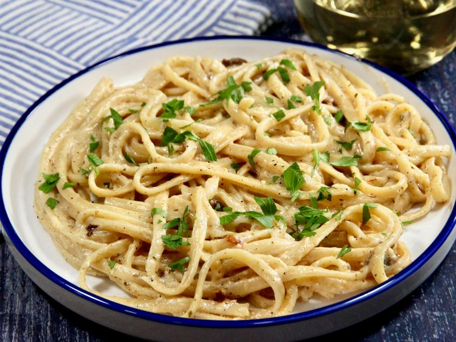

Garlic Noodles
Home

Description
This creamy Cajun pasta gives subtle heat with hints of interesting spices, but won’t set your mouth on fire. This is a perfect choice for an easy, succulent weeknight dinner that will have everybody asking for seconds.
Ingredients
- 8 ounces linguine
- 2 tablespoons unsalted butter
- 3 cloves garlic, minced
- 1/2 cup dry white wine
- 3 teaspoons freshly-squeezed lemon juice
- 2/3 cup heavy cream
- 1 1/2 tablespoon cajun seasoning
- 1 tablespoon all-purpose flour
- 1/2 dried italian seasoning
- 1/2 cup freshly grated Parmesan cheese
- freshly grated black pepper
- chopped fresh parsley
Directions
- Bring a large pot of salted water to a boil. Add linguine and cook al dente according to package directions, 8 to 10 minutes. Drain, reserving 1/2 cup pasta water.
- Meanwhile, melt butter in a skillet over medium heat. Add garlic, and cook until fragrant, about 30 seconds. Pour in white wine and lemon juice, and bring to a boil. Reduce heat, and simmer, stirring occasionally, for about 3 minutes.
- In a small bowl, whisk cream, Cajun seasoning, flour, and Italian seasoning together until smooth. Gradually add to the skillet, whisking constantly until well incorporated, about 1 minute. Stir in Parmesan and sun-dried tomatoes, stirring until slightly thickened, 1 to 2 minutes.
- Add linguine, and toss until well coated. If a bit thick, add pasta water a teaspoon at a time to reach your desired consistency. Season with black pepper, garnish with parsley or green onions, and serve.